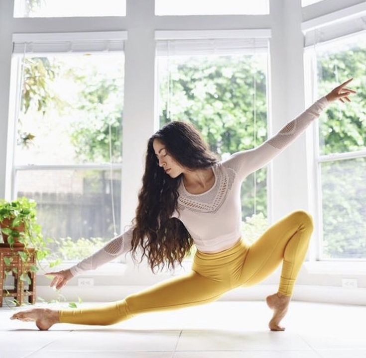
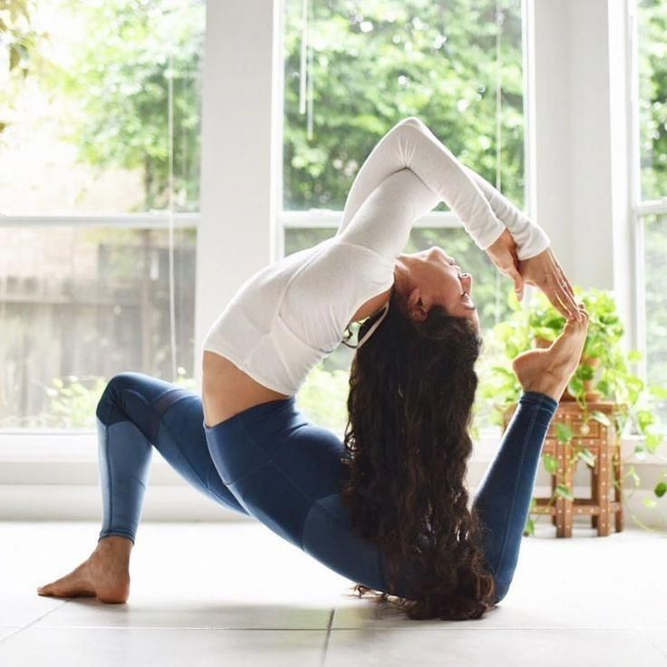
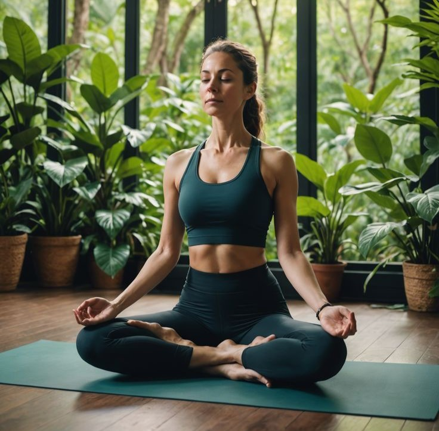

Fernanda
Tutora Fernanda é nossa especialista em meditação e mindfulness, guiando os alunos em uma jornada profunda de autoconhecimento e conexão com o momento presente.
Marcar Aula


No Serenity Flow, acreditamos que o yoga é mais do que uma prática; é uma jornada pessoal que transforma o corpo, acalma a mente e eleva o espírito. Nosso estúdio é um espaço acolhedor, onde cada pessoa é recebida de braços abertos, independentemente de sua experiência ou nível de habilidade.
Tutora Fernanda é nossa especialista em meditação e mindfulness, guiando os alunos em uma jornada profunda de autoconhecimento e conexão com o momento presente.

Tutora Pri possui mais de 10 anos de experiência e é especializada em yoga restaurativo, ajudando os alunos a encontrar paz interior e equilíbrio em meio ao caos da vida cotidiana.
Iniciante
Avançado
Meditação
